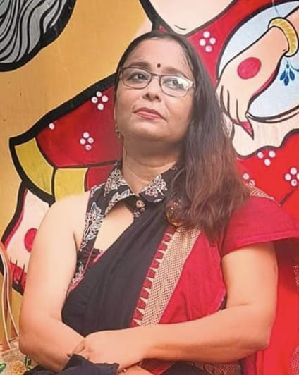

About Us
It all started on the day, 20th January, 2019, a bunch of Facebook friends with a common interest got togehter and went for a tour. Never thought this path will lead to something so big. One trip after another and with my love of writing of travelogues attracted many more friends with a common interest to travel and explore new places. That’s how Facebook group of “Women’s Travel Club Kolkata” was born in April, 2019 managed by Jhumur Nandy. To contact us on WhatsApp, click this link.
Mission & Vision
The group was formed to enable solo women travellers to chase their dreams and passion for travel and explore new places and also to build a community for all who loves adventure and want to experience the vivid cultural diversity of our country and outside. It is our vision to create and maintain this group and put utmost effort to ensure safety and security for all women travellers in this group so that they can enjoy and travel to all new and beautiful unexplored places that had been in their dreams forever. A lot of effort is needed to plan and execute a programme especially for a all women group having various age differences on points like safety, security and comfort. You all know we do not plan for common travel destinations but Women’s Travel Club, Kolkata is always keen to discover new places and plan to execute them in a professional way so that our members can have a hassle-free and memorable tour every time. Now, looking at the list of past tour list we feel proud of our achievement as a group in this small span of time.
I as an admin of this group want to thank all of you for coming together and helping me in building this community.---Jhumur Nandy
Reviews
Dublagadi r Itachuna duto chhoto trip er por Just 10 din er Ladakh trip sesh kore elam. Amar moto serious asthma patient... je kono rokom oxygen support chhara, etto valo vabe ghure aaste parlam- full credit goes to Jhumur Nandy . Or detail guidance r care chhara, e trip ta etto valo vabe complete kora somvob chhilo na. Aami happy ei group e ghure. Future eo, ro trip korte chai. Onyoder o recommend korbo- ei group e ghorar jonyo. You will love it.
---Sharabani Pal
আমি ডক্টর কোয়েলা ঘোষ , অশোকনগর থেকে বলছি।এই সেপ্টেম্বরে আমি Women's travel club Kolkata থেকে লাদাখ বেড়াতে যাই ।লাদাখ অসম্ভব ভালো ঘুরেছি এবং সমস্ত ক্রেডিট Jhumur Nandy কে দিতে হবে , কারণ যবে থেকে আমরা বুকিং করেছি লাদাখ ট্রিপ ঝুমুর আমাদের প্রথম থেকেই অ্যাডভাইস দিয়েছে যে কি করতে হবে, কি করতে হবে না !!কেন কি ওখানে AMS হতে পারে। ঝুমুর আমাদের প্রতিটা প্রান্তর খুব ভালোভাবে ঘুরিয়েছে, Uming la pass(higher than Everest base camp) যেখানে কেউ নিয়ে যায় না সেখানে ঝুমুর আমাদের নিয়ে গেছে। lifetime experience is Umling La pass।এছাড়া হোটেল, খাবার সবই অনবদ্য।আমরা অভিভূত হয়ে গেছি ঝুমুরের সঙ্গে লাদাখ ট্রিপে গিয়ে।আমি চাই প্রতিটা মেয়ে একবার অন্তত ঝুমুরের সাথে লাদাখ ট্রিপে বা যে কোনো ট্রিপে যাক, নইলে ঝুমুরের সঙ্গে বাকী ট্রিপ এজেন্টদের অনেকটাই পার্থক্য সেটা বোঝা যাবে না।বাকিটা আমি ভিডিওতে বলেছি আপনারা সবাই শুনে নেবেন।
---Dr Koyela Ghosh
Women’s travel club er saathe ghorar experience aamar matro 4 bar kintu ai 4 barer experience a aamar oneeek anonder moment er sakhkhi, sottyee katha bolte ki aamar husbander asusthota r meyer karmosutre baire thakar jonnyo akdom grihobondi hoye porechilam,woman’s travel club aamay abar notun kore nature k enjoy korar sujog kore diyeche, Wtc er kornodhar JHUMUR NANDY er katha olpo kathay guchiye kibhabe likhbo janina— osombhob patience, sobsomoy hese sob problem solve kore, or jayga gulo choice thake bhison uncommon, offbeat, jar jonnyo o jekhane jay tar group creat kore sob details a bole day sojasuji jate pore keu kichu na bolte pare karon offbeat jaygay time a toilet ba khabar restaurant nao miltey pare tai jhumurer sob kichu aage theke bola thake tobe hay jekhan a ghurte niye jaoa hoy tar A-Z ghoray kichchu bad jay na karon Jhumur nije akjon Nature Lover Lady,jhumur! Ekhane photo tule dao, okhane video kore dao, Na nei , hasimukhe sokoler ichcha metay, train er tkt nije responsibility niye kete deoa to aachei ter upor aged person ra Lower birth by chance na pele Jhumur nijer birth chere day( aamar personal experience),ghoray khub i aaramdayok bhabe,Restrurent a khete bosar somoy aami notice korechi joto late i hok sobai k khete bosiye terpor nije bose, khuuub responsibility niye puro tour koray, sobdik a lokhkhyo or sobsomoy,jhumurer saathe baratey na gele WTC k chena jay na, last akta katha boli— substitute pele jabar aager moment a cancel korleo puro refund day jhumur, akta paysa o kate na( jeta kintu onnyo travel group a kichu hole o kate) Hats Off WTC, JHUMUR also❤❤❤
---Jharna Ganguly
"সত্যিই তুমি কাউকে চেনো না?", "শুধু WhatsApp এ যোগাযোগ করে সব payment আগে করে দেবে?" " এরকম off-beat জায়গা, সব মেয়েরা যাবে, secure তো?"-- এমন হাজারো প্রশ্নবাণ সামলাতে সামলাতেই পৌঁছে গেলাম হাওড়া, গন্তব্য: সাসারাম, বিহার। আর পৌঁছেই বিস্ময়! 😳 "মহিলাদের দল তো নয়, রীতিমতো বর-বাদ বাহিনী !" 😀 'Women's Travel Club' এর সাথে সেই আমার প্রথম পরিচয়। অসমবয়সী একঝাঁক ভ্রমণ- পিপাসুর দল তখন সহযাত্রীদের চেনা জানার আনন্দে মশগুল। তারপরের দু -তিন দিনে প্রকৃতি, পাহাড়,ঝর্না, মন্দির আর শেরশাহের সমাধির ইতিহাস আত্মস্থ করতে করতে সেই চেনা - জানা আরো গাঢ় হলো। তখন বন্ধুর যাত্রা পথের দৈর্ঘ্য গেলো কমে আর মুগ্ধ আমি, ধূ ধূ প্রান্তরের একধারে বট নিমের ছায়ায় শালপাতা হাতে সকলের সাথে খাবারের অপেক্ষায় আমি, বেহিসাবী হাসির হিল্লোলে লুটিয়ে পড়া আমি, ঝর্নার ঝর ঝর কলতানের পাশে মুখর আমি - আকন্ঠ পান করতে লাগলাম প্রতিটি ক্ষন, প্রতিটি মুহূর্ত.....তবে অবশ্যই সবার সঙ্গী হয়ে । সাক্ষী? মোবাইল গ্যালারি - র কমবেশি ৩০০ ছবি, নানা রঙ এ, নানা ঢং এ ।😊 প্রায় ২৮/৩০ জনের একজায়গায় থাকার অ্যারেঞ্জমেন্ট , সময়মতো খাবারের ব্যবস্থা, ৬/৭ টা গাড়ির সাথে সমন্বয়, টাইম ম্যানেজমেন্ট, বয়স্কদের জন্যে একটু হলেও আলাদা যত্ন আর সর্বোপরি ঘোরার আনন্দটা ষোলোআনা উসুল করা--- এতকিছু কিভাবে একা সামলানো যায়, ঝুমুর দি কে না দেখলে সত্যি আমার অজানা থেকে যেতো।💕 তাই হোটেলে কার রুম একটু ছোট ছিলো, কার বাথরুম এর বেসিন এ জল পড়েনি, কার রাত এ ঘুম হয়নি আশেপাশের আওয়াজ এ অথবা কার হোটেলের সিঁড়ি ভাঙতে বড্ডো অসুবিধে হয়েছে --- সব ছাপিয়ে মনে গেঁথে রয়েছে শুধু ছোটো ছোটো টিলার পাশ দিয়ে এঁকে বেঁকে চলা পিচ রাস্তা, বাঁধের ওপর ঝিরঝির বৃষ্টি, পাথরের চাতাল থেকে ঝাঁপিয়ে পড়া দুধসাদা ঝর্না আর টলটলে জলে ঘেরা শেরশাহ সমাধির থামের আড়ালে অতীতের ফিসফিসানি। "Women's Travel Club" তাই আমার চোখে 'খোলা আকাশ ', যেখানে মেঘ আছে, বৃষ্টি আছে, রোদ্দুর আছে, আছে একটু আধটু ঝড়ো হাওয়াও, কিন্তু এই সবকিছুকে উপভোগ করার মতো মানুষ আছে অনেক অনেক বেশি । তাই যারা আজও ' যাবো কি যাবো না '- র দোলাচলে দুলছো, তাদের বলবো - সাহস করে চৌকাঠের বাইরে একটা পা রাখো - হাত ধরার জন্য রয়েছে "Women's Travel Club"....🥰🥰